7 Data Visualization
7.1 Content
The final chapter in this part focuses on data visualization. While some techniques for presenting data were already described in the chapter on Exploratory data analysis, this chapter will cover the topic in more depth and introduce you to the most commonly used tool for data visualization in R - the ggplot2 package. The main advantage of ggplot2 in comparison with some of the out-of-the-box plotting capabilities coming with R is the simplicity of creating relatively complex and nice looking plot, which would often take much longer to produce with R base graphics.
The ggplot2 package is a part of tidyverse, which was introduced in the previous chapter, and it is often useful in conjunction with some of the data manipulation tools offered by other tidyverse packages. You can load the library directly:
library(ggplot2)However you may also attach it along with other tidyverse packages:
library(tidyverse)We will also load the salaries dataset, which describes the salaries of US professors. To do this, you will need to install the package using the carData package using the install.packages function:
install.packages('carData')To load the data, simpy execute the below code. The dataframe will be attached to your global environment.
data('Salaries', package = 'carData')
glimpse(Salaries)
Rows: 397
Columns: 6
$ rank <fct> Prof, Prof, AsstProf, Prof, Prof, AssocProf, Prof, Prof, Prof, Prof, AssocProf…
$ discipline <fct> B, B, B, B, B, B, B, B, B, B, B, B, B, B, B, B, B, A, A, A, A, A, A, A, A, A, …
$ yrs.since.phd <int> 19, 20, 4, 45, 40, 6, 30, 45, 21, 18, 12, 7, 1, 2, 20, 12, 19, 38, 37, 39, 31,…
$ yrs.service <int> 18, 16, 3, 39, 41, 6, 23, 45, 20, 18, 8, 2, 1, 0, 18, 3, 20, 34, 23, 36, 26, 3…
$ sex <fct> Male, Male, Male, Male, Male, Male, Male, Male, Male, Female, Male, Male, Male…
$ salary <int> 139750, 173200, 79750, 115000, 141500, 97000, 175000, 147765, 119250, 129000, …The data consists of 6 variables, describing academics rank, discipline (A for theoretical and B for applied), experience measured in years in service and years since PhD attainment, the subjects sex and salary. To see more details about the data, use ?carData::Salaries
The plotting syntax
Similarily to the other tidyverse tools explored in the previous chapter, ggplot uses its own, original approach to creating plots, which is quite different from what you have previously encouneterd in the exploratory data analysis lesson. To initialize a ggplot object, you always call the ggplot function, specifying the name of your data frame as the first argument.
ggplot(Salaries)As you can see this initiates an empty plot. We then furhter specify the variables we want to associate with the object using the aes() function. The aes abbreviation stands for aesthetic mappings. It defines bindings between variables in the dataframe specified as the first argument of the ggplot object and aesthetic elements of the object - for example, the x and y axes of the plot, line/point colors and shapes or bar fills. For example, aes(x = absences) can be interpreted as “link the variable absences with the x-axis of this plot”.
ggplot(Salaries, aes(x = salary))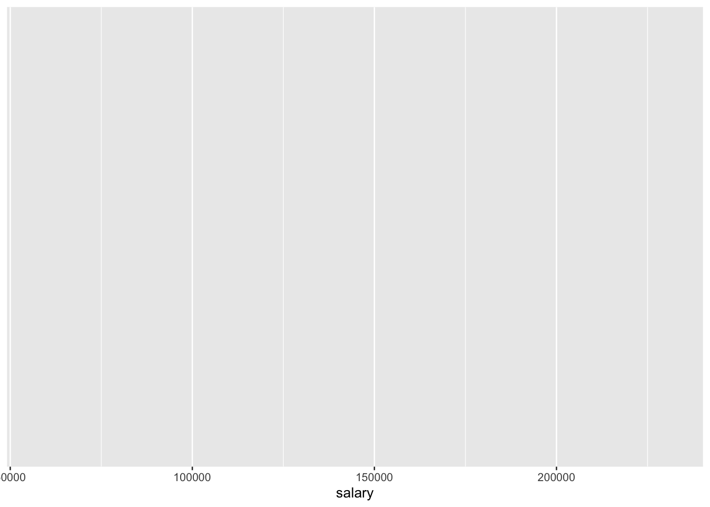
Now the figure includes an x axis, with some automatically chosen tick locations. The final step is to create an actual plot. This is done by “adding” a so-called geom to the plot skeleton we have created so far. Geoms are simply functions used to create different plot types representing the data associated with a ggplot object through ggplot and aes - for example, geom_histogram is used to create a histogram and geom_boxplot to create a boxplot. Geoms are “added” to the ggplot object using the + operator.
ggplot(Salaries, aes(x = salary)) +
geom_histogram()
`stat_bin()` using `bins = 30`. Pick better value with `binwidth`.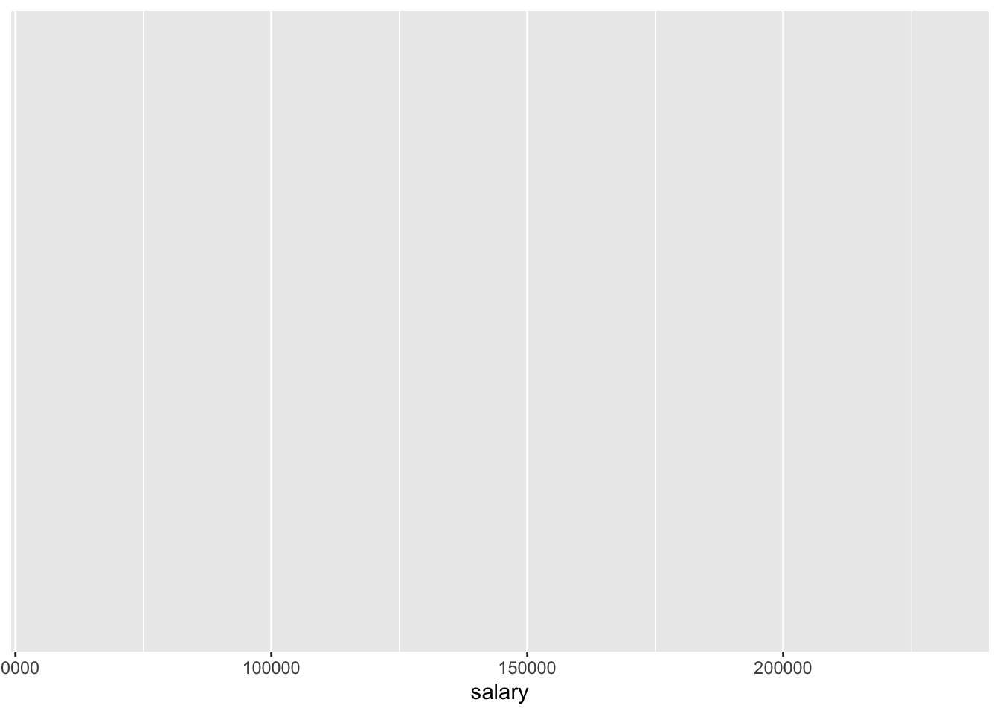
We can see now that the histogram of the variable appears on the plot. The plot also comes with a message prompting us to manually specify the bin width for the histogram, which can be done through the arguments of the geom function - either by specifying the number of bins through bins or the width of individual bins through binwidth.
ggplot(Salaries, aes(x = salary)) +
geom_histogram(bins = 40)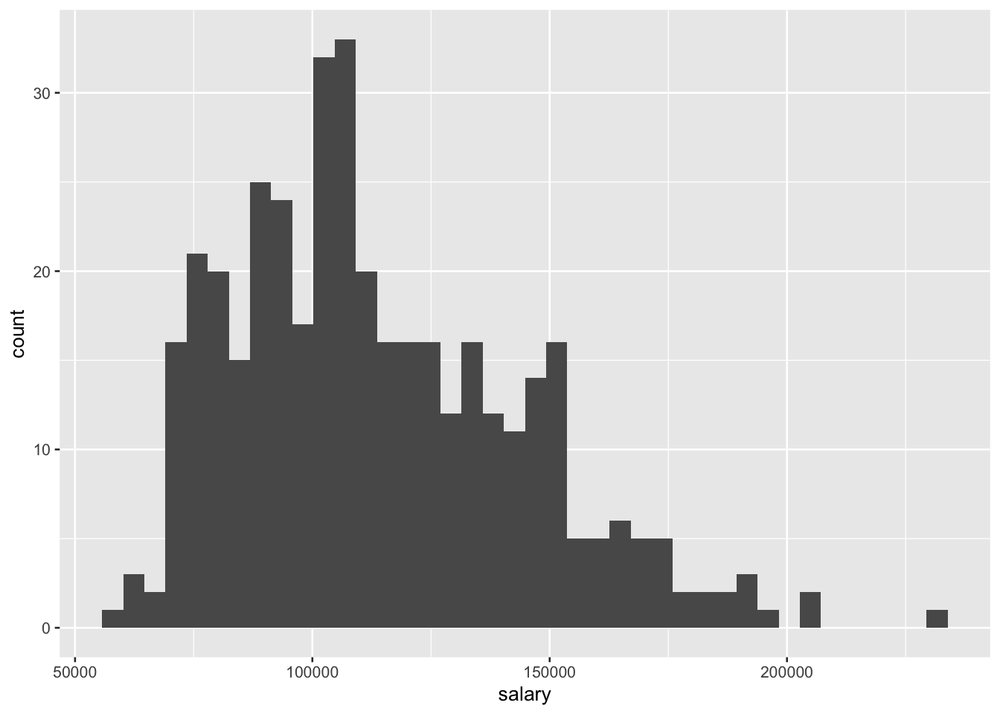
ggplot(Salaries, aes(x = salary)) +
geom_histogram(binwidth = 5000)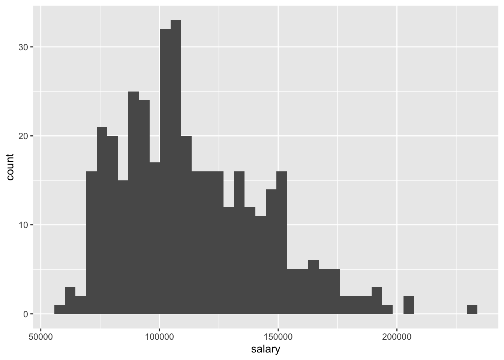
We can also change to colors of the bins as well as their borders:
ggplot(Salaries, aes(x = salary)) +
geom_histogram(binwidth = 5000, fill = 'blue', color = 'black')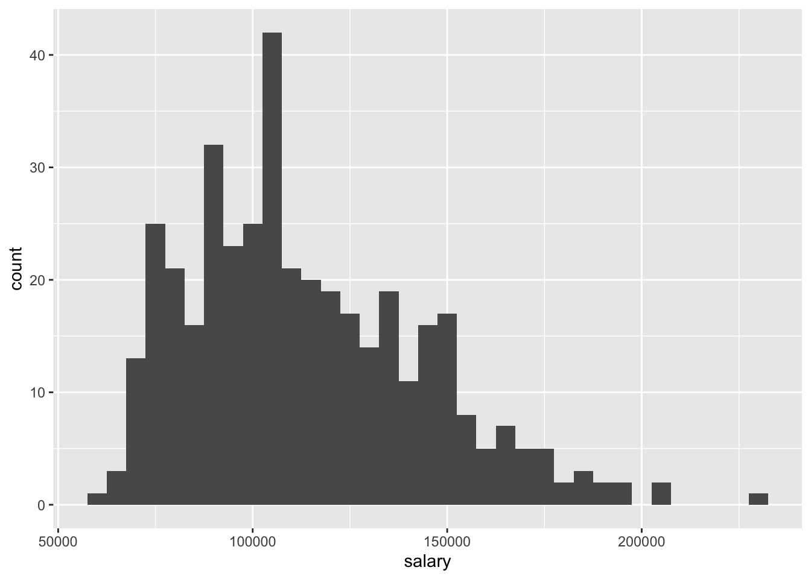
As mentioned earlier, the aesthetic characteristics of the plot such as border color or fill can be treated as a representation of the data, not only the visual characteristics of the plot. For example, continuing with the absences example we may see the break ouf of the absences between male and female students, by specifying the fill argument in the aesthetic mapping:
ggplot(Salaries, aes(x = salary, fill = sex)) +
geom_histogram(binwidth = 5000, color = 'black')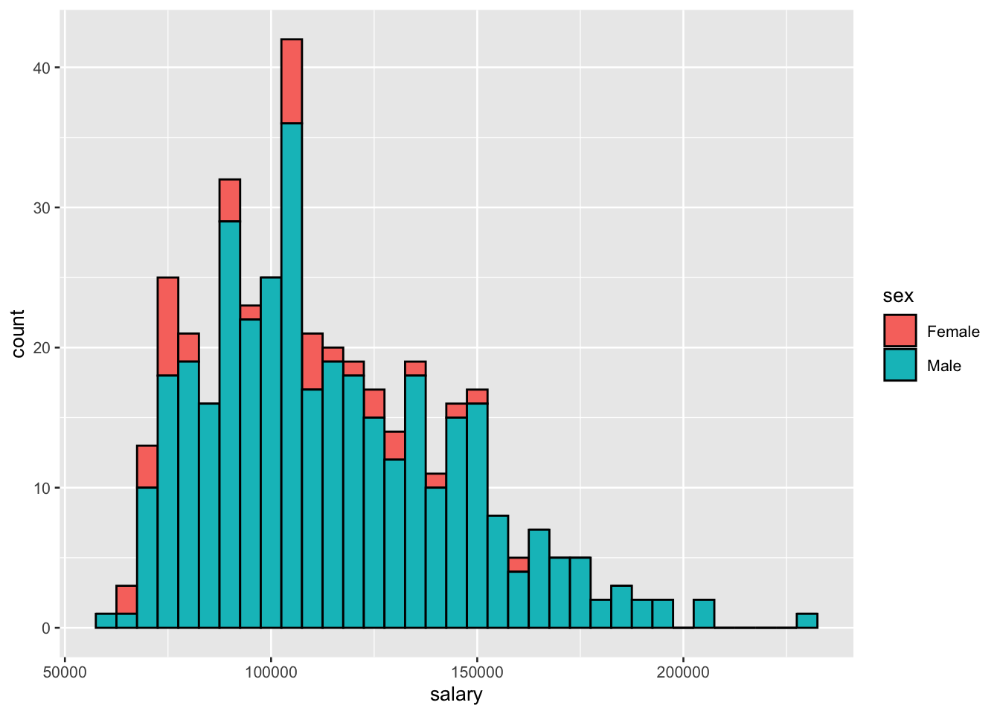
This also automatically adds a legend on the side of the plot. The blue color represents the proportion of each bin represented by male students and the red - by female students.
An important thing to note is that the aesthetic mapping created by the aes() function can be defined globally i.e. for the entire ggplot figure, as in the case above (ggplot(Salaries, aes(x = salary))), as well as a locally, i.e. only for one specific geom (geom_histogram(aes(x = salary)). In the former case, the entire figure will use the set aesthetic mapping, while in the latter, it will apply only to the specific geom.
ggplot(Salaries) +
geom_histogram(aes(x = salary, fill = sex), binwidth = 5000,color = 'black')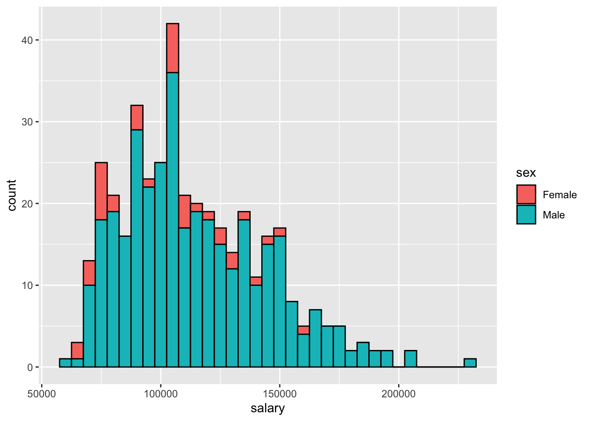
Note that that in this case, both global and local mappings produce exactly the same output. However, when adding multiple geom structures to one plot, as we will see later, using a global vs local aesthetic mapping can lead to very different results.
All about geoms - plot types in ggplot2
In this section, we will explore some of the basic plot types (or geoms) offered by the ggplot2 package. The number of geoms available is vast, and this isn’t by any means an exhaustive discussion of the topic - you can find the full list in the ggplot2 cheatsheet. Even more can be found through external, ggplot-based packages. However, learning the basics of just couple of them should help you gain a sufficient understanding of ggplot’s plotting philosophy to be able to explore the rest by yourself and use them whenever you need to.
Density estimate
The density estimate is an alternative way to draw a histogram of the data. It represents the distribution of a continous variable by drawing a line. You can see that the shape of the density plot of absences below directly corresponds with the histogram of this variable from the previous example.
ggplot(Salaries, aes(x = salary)) +
geom_density() 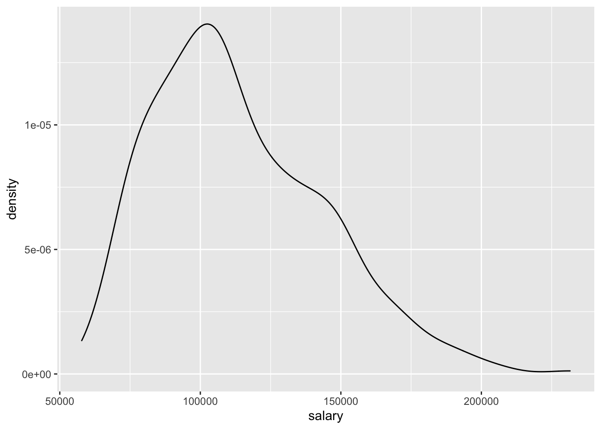
Kernel density estimates are particularly useful to compare the distribution of a variable between different values of a grouping variable. For example, we can examine the difference in the distributions of the salary depending on the position held by the individual:
ggplot(Salaries, aes(x = salary, fill = rank)) +
geom_density(alpha = 0.3)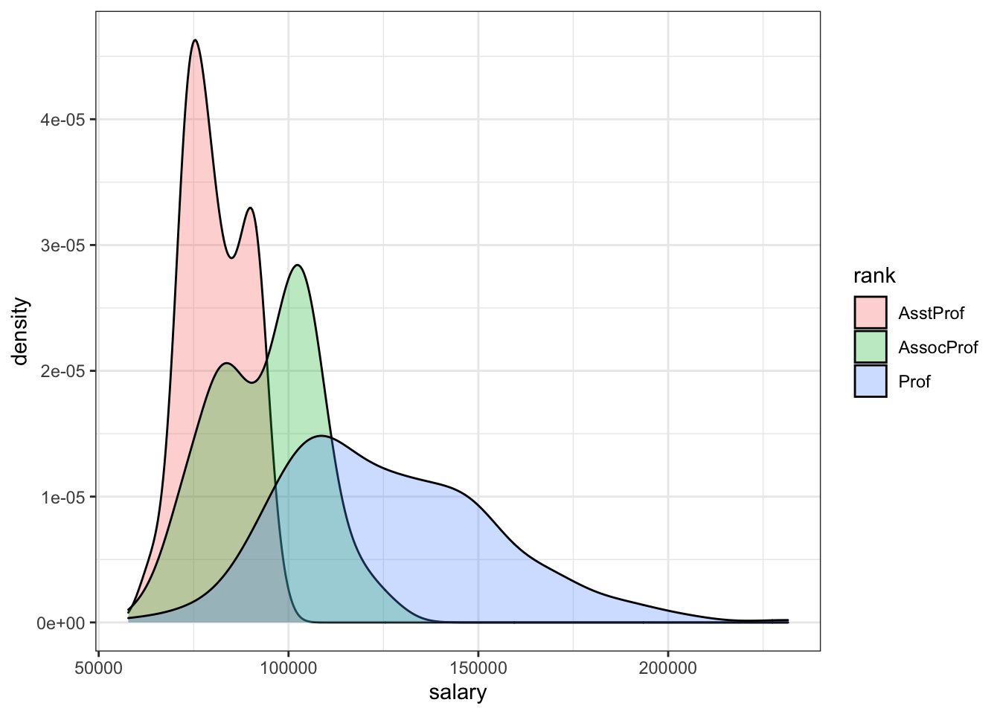
The differences are clear-cut - it appears that as expected, higher position held generally leads to higher median of earnings. However, each position also has higher variability in income, with the spread of Professors earnings more than twice as large as for Assistant Professors.
Barplots
Histograms and kernel density estimates are useful in representing continuous variables, such as temperature, GDP or hours of absence. In case of discrete variables, which only take a finite and unordered set of values, it’s often better to use bar plots. With ggplot2, these can be easily obtained using geom_bar. For example, we can use it to represent the of academic ranks within our dataset.
ggplot(Salaries, aes(x = rank)) +
geom_bar(width = 0.5, fill = 'forestgreen')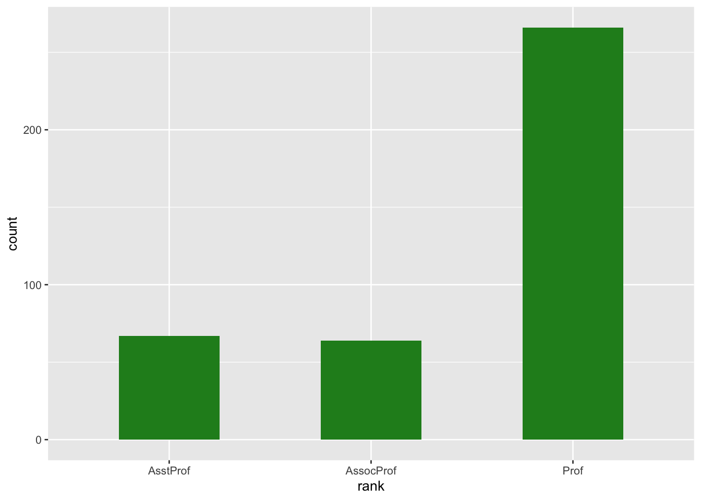
You may also want to make the bar plots horizontal. There are two ways to to this: the old approach is simply to add coord_flip() to your ggplot object. You may still encounter this way of plotting horizontal bar plots in other users code.
ggplot(Salaries, aes(x = rank)) +
geom_bar(width = 0.5, fill = 'forestgreen') +
coord_flip()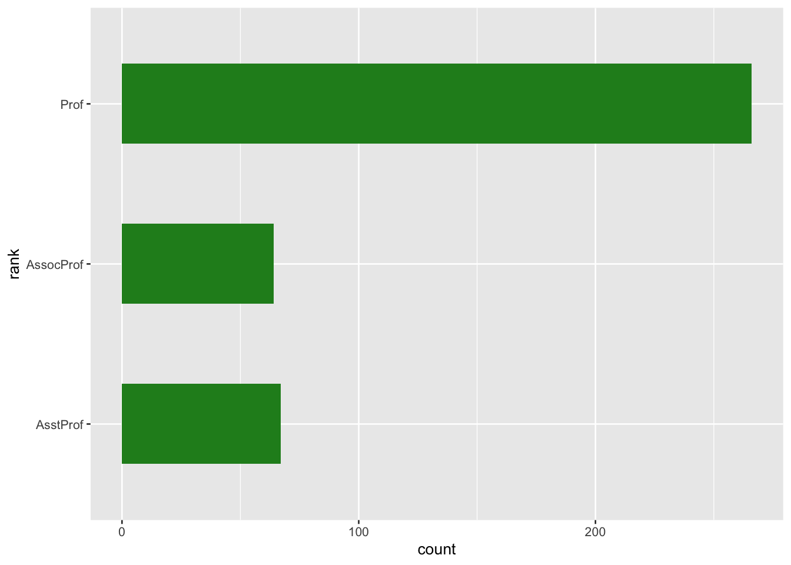
However, since ggplot version 3.3.0, providing the y axis instead of x axis leads to the same result. Furthermore, it doesn’t cause unnecessary confusion caused by flipping the axis (for example, the y-axis label needs to be specified as the x-axis label when coord_flip() is applied). Thus it is recommended to use the second approach, provided that you have the most up-to-date version of tidyverse installed.
ggplot(Salaries, aes(y = rank)) +
geom_bar(width = 0.5, fill = 'forestgreen')Again, we can also fill the bars with another variable, simply by specifying the fill argument in the aesthetic mapping definition:
ggplot(Salaries, aes(x = rank, fill = sex)) +
geom_bar(width = 0.5)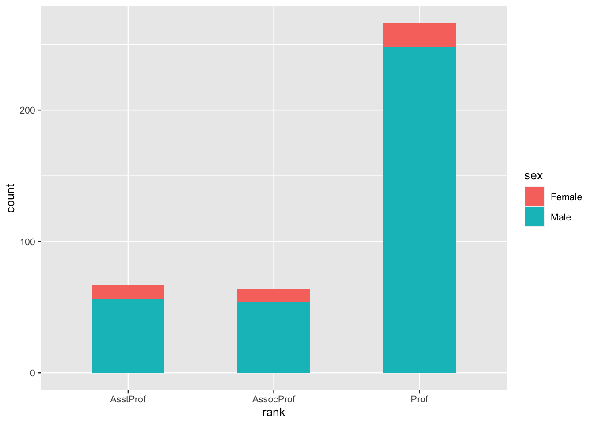
The bars can also be placed side-by-side to improve comparison. To do that, we simply specify a named argument position to the geom_bar function and set it to 'dodge', as seen in the example below. This means, that one bar should ‘dodge’ another, and be placed next to it. The default value of the position argument is 'stacked', which is pretty self-explanatory and can be seen in the previous example.
ggplot(Salaries, aes(x = rank, fill = discipline)) +
geom_bar(position = 'dodge')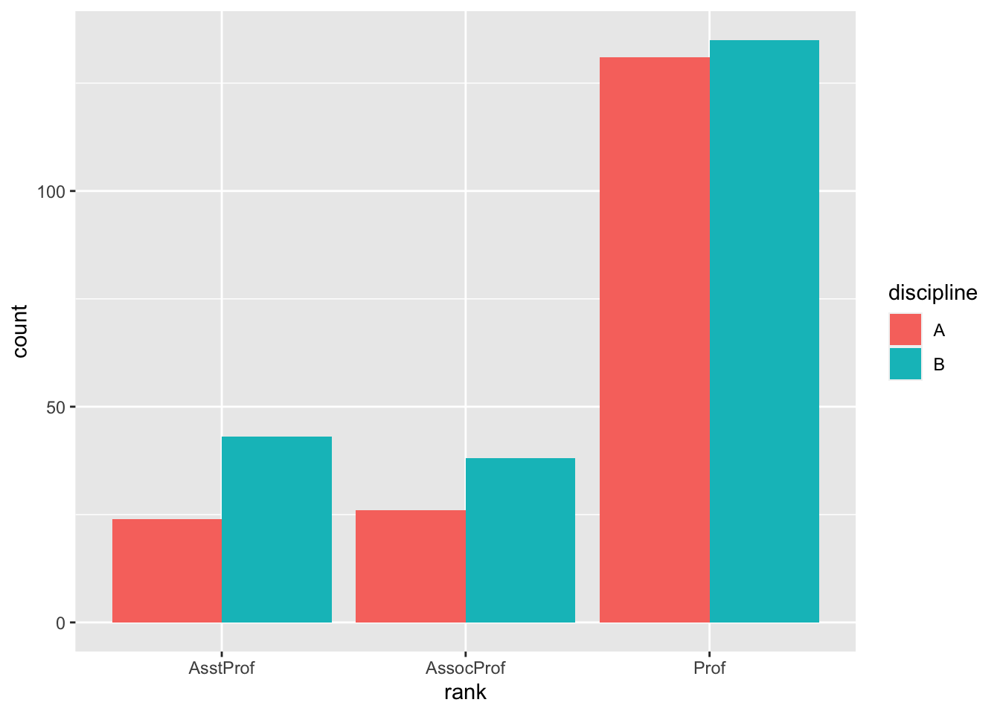
We can also use barplots to present summary statistics visually - for example, the average salary of a professor given his or her rank. To do that, we first construct a summary data frame, using tools covered in the previous chapter, and then plot the result.
salary_by_rank <- Salaries %>%
group_by(rank) %>%
summarise(avg_salary = mean(salary)) %>%
ungroup()
`summarise()` ungrouping output (override with `.groups` argument)
ggplot(salary_by_rank, aes(x = rank, y = avg_salary)) +
geom_bar(stat = 'identity', width = 0.5, fill = 'firebrick')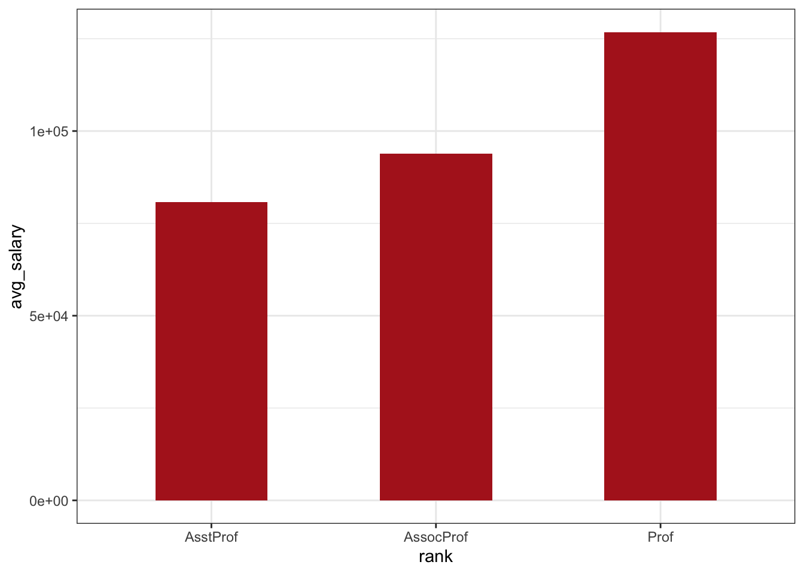
Note that in this case we need to specify both x and y aesthetics, as x represents the name of the group (in this case the professors’ rank) and y - the associated value, indicated by the height of each bar. Moreover, we need to setthe stat argument of geom_bar to identity. This is because the default setting, stat = count implies that ggplot takes only one, discrete variable as arguments and counts the number of observations in each of the group defined by the levels of the variable - an operation very similar to the output of table(math$health). We can also use geom_col, which is a short-hand for geom_bar(stat = 'identity') and produces the same output:
ggplot(salary_by_rank, aes(x = rank, y = avg_salary)) +
geom_col(width = 0.5, fill = 'firebrick')Boxplots
Another way to compare a variable across groups is through the use of boxplots. Boxplots were described in the chapter on exploratory data analysis as a way of evaluating the distribution of a continuous variable. They are also implemented in the ggplot2 package and can be used for comparisons of the continuous variables distributions across multiple groups defined by a discrete variable. This can be done by specifying the grouping variable to the x aesthetic and the continuous variable which we want to examine to the y aesthetic.
ggplot(Salaries, aes(x = sex, y = salary)) +
geom_boxplot(width = 0.5)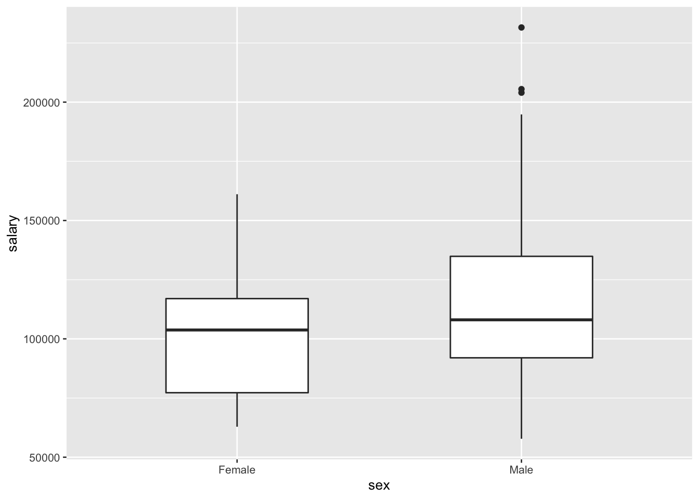
We can see that while the medians of Male and Female professor’s wages in our sample are similar, the interquantile range is much higher for men. At the same time, the distribution of male wages is more spread out, as indicated by larger box, longer tails. It also includes some outliers.
We can also draw an arbitrary summary statistic - such as the mean - on the plot, by using the stat_summary function - we specify the statistic we want to use with the fun keyword argument and the geom using the geom argument. In this case, we add a cross to indicate the mean salary for both sexes on the plot:
ggplot(Salaries, aes(x = sex, y = salary)) +
geom_boxplot(width = 0.5) +
stat_summary(fun = "mean", geom = "point",
shape = 3, color = "red")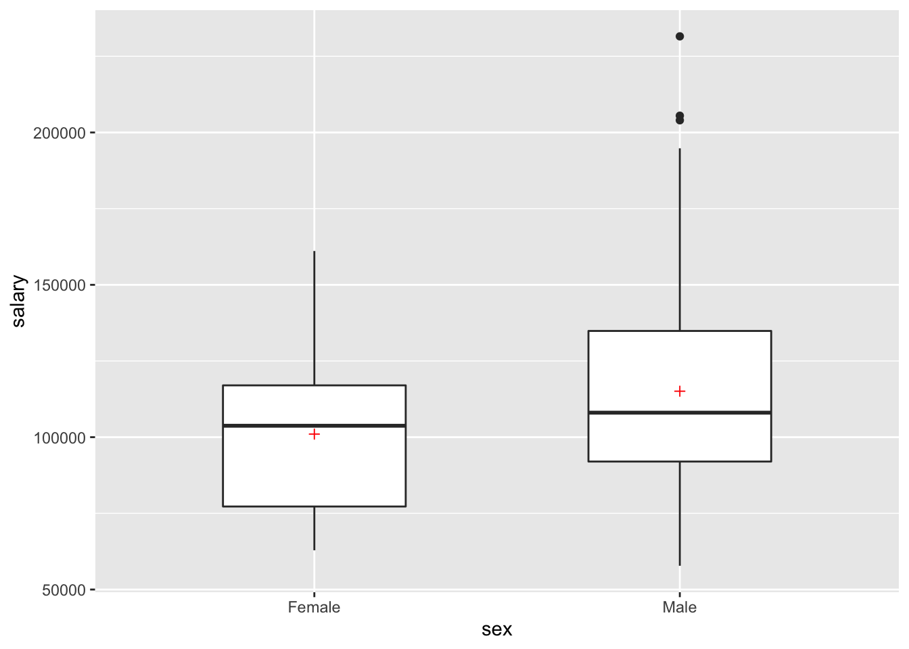
Violin plots
Violin plots are closely related to box plots, however they depict the shape of the variables’ distribution. As such, they overcome the issue related to the use of boxplots decribed in the exploratory analysis chapter - namely that two distributions can have identical box plots, yet very different underlying shapes. The violin plots avoid it by connecting boxplots with kernel density estimates, giving a better approximation of the shape of a variable’s distribution.
ggplot(Salaries, aes(x = sex, y = salary)) +
geom_violin(width = 0.5)We can see the strength of that by coming back to the misleading example from the previous chapter. Suppose we have the
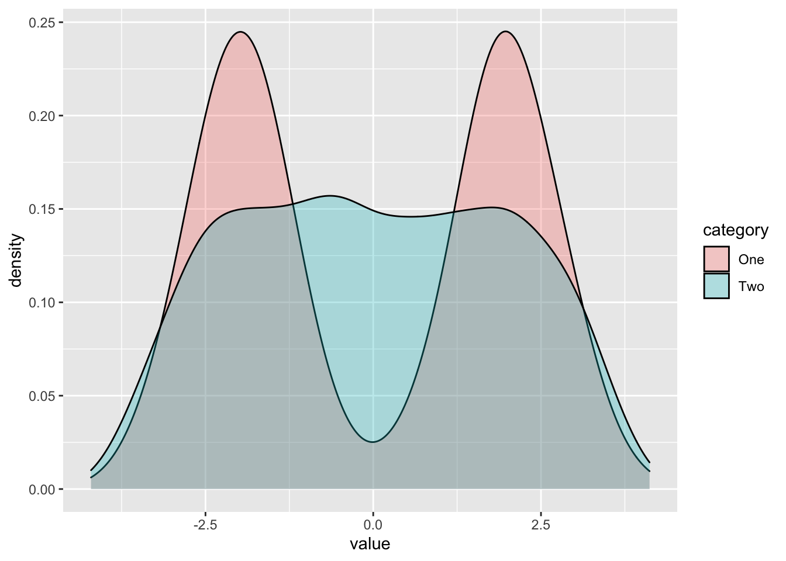
The boxplots look very alike:
ggplot(dt, aes(x = category, y = value)) +
geom_boxplot()However, the violin plot give away the entire story - namely the fact that the first category has two peaks (i.e. comes from a bimodal distribution, using the proper statistical terms), and it is unlikely that we observe the median value. A good example of such distributions from the political realm are the self-identification on the left-right ideological scale, with majority of respondents reporting to be either slightly conservative or slightly liberal.
ggplot(dt, aes(x = category, y = value)) +
geom_violin()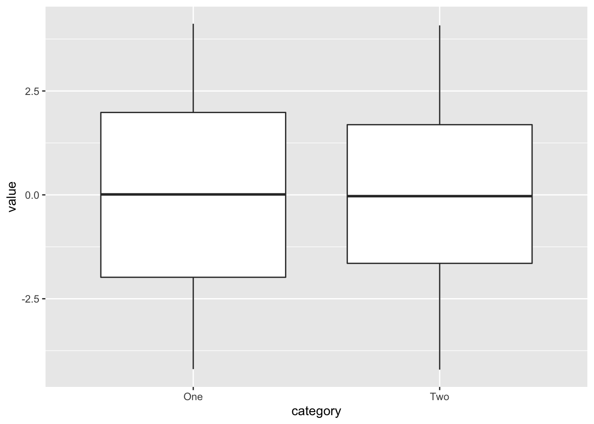
Scatter plots
So far we have described multiple ways of visually representing a continous variable, as well as the relationship between a continous variable and some discrete grouping variables. Under many circumstances, we are interested in examining the relationship between two continuous variables. One of the most commonly employed data visualization techniques for problems like this are scatter plots, which simply describe each observation as a point marked on a two-dimensional graph, with x axis representing one variable and y axis - the other. This can be seen in the example below, in which we look at the relationship between the professor’s experience approximated by years since attaining PhD and his or her salary.
ggplot(Salaries, aes(x = yrs.since.phd, y = salary)) +
geom_point()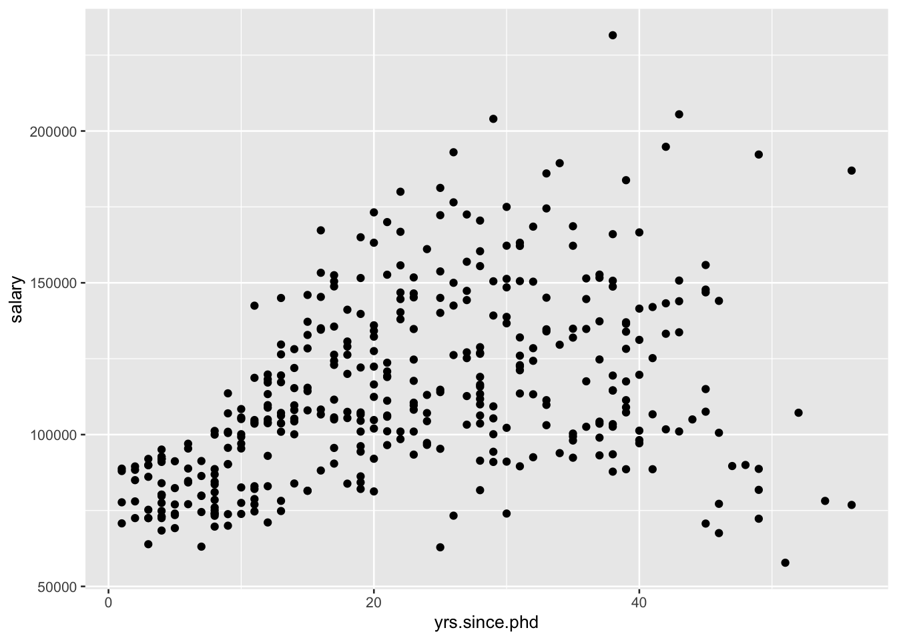
It is clear that we can see a some sort of relationship between the experience and earnings. In other words, there’s a degree of positive correlation between these two variables (we will examine this term more in depth in in the next chapter), i.e. professors with more experience tend to earn more on average. However, with experience the relationship becomes more noisy, as there’s more variation in earnings of the more experienced academics. As in the previous cases, we can specify additional aesthetics such as color or shape:
ggplot(Salaries, aes(x = yrs.since.phd, y = salary,
color = rank, shape = rank)) +
geom_point()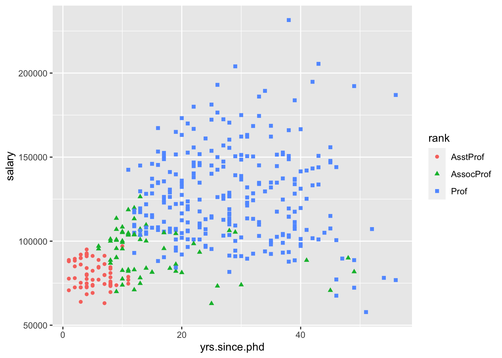
Line of best fit
We can also add a line of best fit to our plot, by using the geom_smooth() geom, with the method argument specified to 'lm'. The line of best fit is simply the line that is closest to each of the points in the plot on average. The 'lm' methods stands for linear model - a method used for fitting such a line, described in more detail in the next part, in chapter on linear regression.
ggplot(Salaries, aes(x = yrs.since.phd, y = salary)) +
geom_point() +
geom_smooth(method = 'lm')
`geom_smooth()` using formula 'y ~ x'
Here, you should be able to fully understand the difference between local and global aesthetic mappings mentioned earlier in the chapter. Notice the difference between providing the aesthetic mapping at the global level (i.e. to the ggplot() function call)…:
ggplot(Salaries, aes(x = yrs.since.phd, y = salary, color = rank)) +
geom_point() +
geom_smooth(method = 'lm')
`geom_smooth()` using formula 'y ~ x'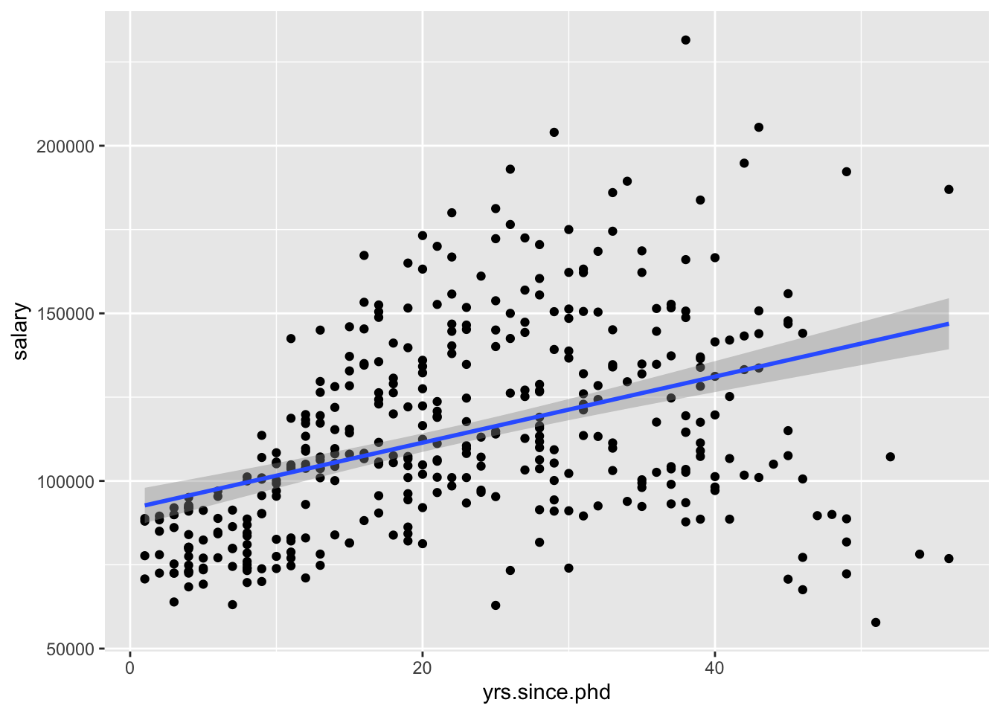
… and just to the geom_point().
ggplot(Salaries, aes(x = yrs.since.phd, y = salary)) +
geom_point(aes(color = rank)) +
geom_smooth(method = 'lm')
`geom_smooth()` using formula 'y ~ x'
In the former case, the color = sex argument is used by both geom_point and geom_line(), which leads to 3 lines of different colors being fitted for each of the groups separately. When the color aesthetic mapping is only provided to the geom_point at the local level, one line is fitted to the data, as specified by the global mapping. Both of these approaches may be useful, depending on our research question. The comparison of these two plots further reveals an interesting behaviour in our data: when all the observations are considered toegether, there seems to be a positive relationship between years since PhD and salary. However when we look at the group level, the relationship appears to disappear - this behaviour is known as the Simpson’s Paradox. In this case, it’s primarily the result of the relationship between the rank and years since PhD - professors with higher ranks have more experience. When the variation in the salaries within those groups is considered, the experience measured in years seems to hardly explain any of the variation in earnings.
Line connecting points
In some cases, we might want to connect points in our figure with a line to depict some sort of trend in the mean of a variable depending on a categorical group that has a natural ordering - for example, suppose we want to visually examining differences in the average earnings of professors in our dataset depending on their years in service.
First we can obtain the average for each group using group_by and summarise.
byage <- Salaries %>%
mutate(yrs_range = cut_width(yrs.since.phd, 5, boundary = 5)) %>%
group_by(yrs_range) %>%
summarise(avg = mean(salary, na.rm = TRUE)) %>%
ungroup()
`summarise()` ungrouping output (override with `.groups` argument)We can then plot the averages using geom_point:
ggplot(byage, aes(x = yrs_range, y = avg)) +
geom_point()While there seems to be some sort of trend in the data (even though the further points divert from it, which is likely the result of small sample size in a given group leading to rather unreliable sample estimates), the plot does not emphasize it enough. To make it more meanigful, we can add a line connecting the points with geom_line. Note that we have to set the group aesthetic to 1, which provides ggplot a hint on how to connect the point.
ggplot(byage, aes(x = yrs_range, y = avg, group = 1)) +
geom_point() +
geom_line()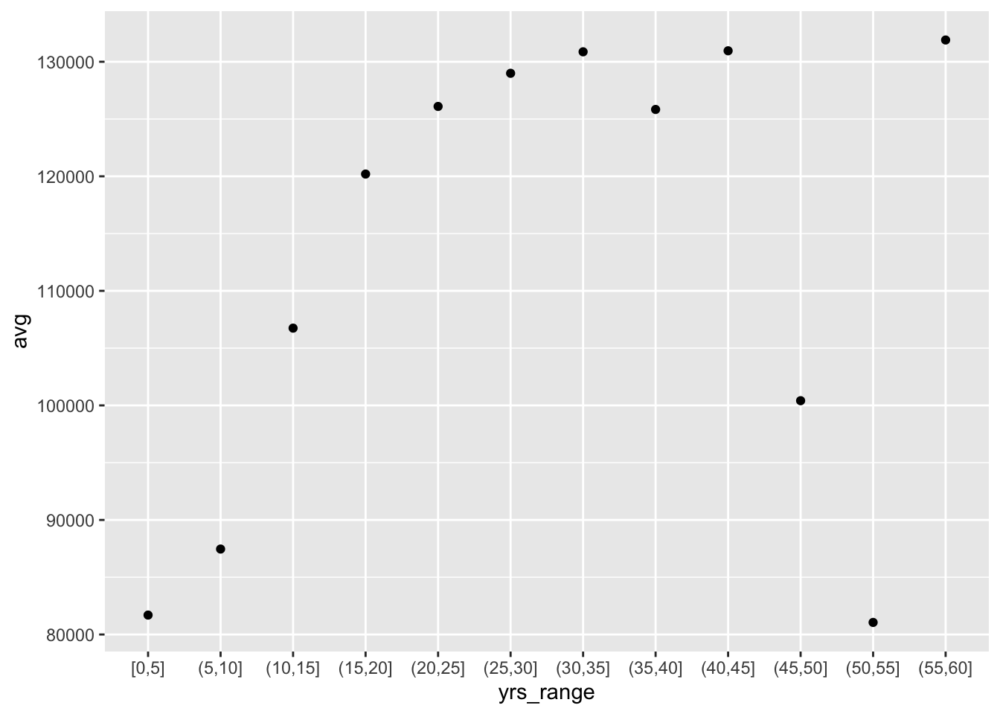
We can extend the following example by comparing the same trend depending on the paid classes taken:
byage <- Salaries %>%
mutate(yrs_range = cut_width(yrs.since.phd, 5, boundary = 5)) %>%
group_by(yrs_range, discipline) %>%
summarise(avg = mean(salary, na.rm = TRUE)) %>%
ungroup()
`summarise()` regrouping output by 'yrs_range' (override with `.groups` argument)
ggplot(byage, aes(x = yrs_range, y = avg, color = discipline,
lty = discipline, group = discipline)) +
geom_point() +
geom_line()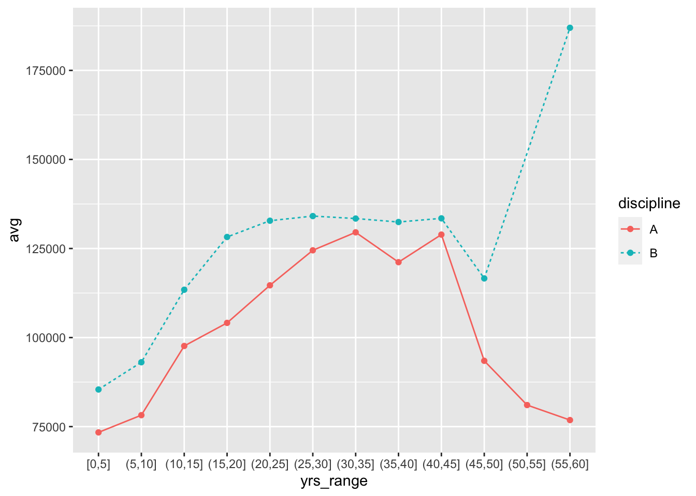
Multiple plots
ggplot2 also makes it possible to put multiple plots in one figure - this is indeed very useful under many circumstances, and many data visualization professionals consider it a good practice, as it follows the rule of small multiples, making the data more digestible to the reader and avoiding informational overload in one plot. Arranging plots into a figure can be done in two ways - based on a value of a categorical variable (‘faceting’) and by arbitrarily putting plots into a rectangular grid.
Faceting
Faceting refers to simply splitting the data by the value of a categorical variable, similarily to the way group_by treats the data when performing regular manipulation. The syntax is relatively simple: we simply add another layer to our plot called facet_wrap and specify the faceting variable following the tilde symbol ~ - this is a commonly used notation in R, indicating some sort of dependence of one variable on another - you will encounter it in the next two chapters.
ggplot(Salaries, aes(yrs.since.phd, salary)) +
facet_wrap(~ rank) +
geom_point() +
geom_smooth(method = 'lm')
`geom_smooth()` using formula 'y ~ x'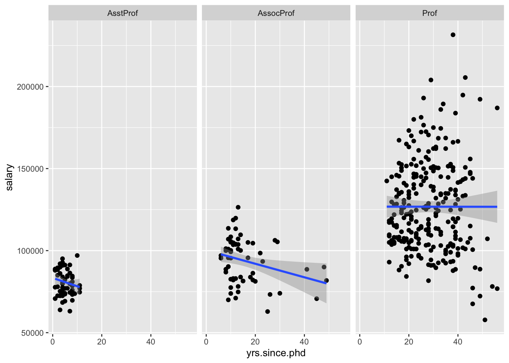
As a result we can see the scatter plots and lines of best fit in three separate plots, each one with an appropriate heading indicating the group of the observations. However, the output is difficult to read, due to the fact that the x-axis in the plot is fixed to the same length for each of the plots - this improves comparability of the figures, but limits its clarity. This can be changed by specifying an additional argument to the facet_wrap layer:
ggplot(Salaries, aes(yrs.since.phd, salary)) +
facet_wrap(~ rank, scales = 'free_x') +
geom_point(aes(color = sex)) +
geom_smooth(method = 'lm')
`geom_smooth()` using formula 'y ~ x'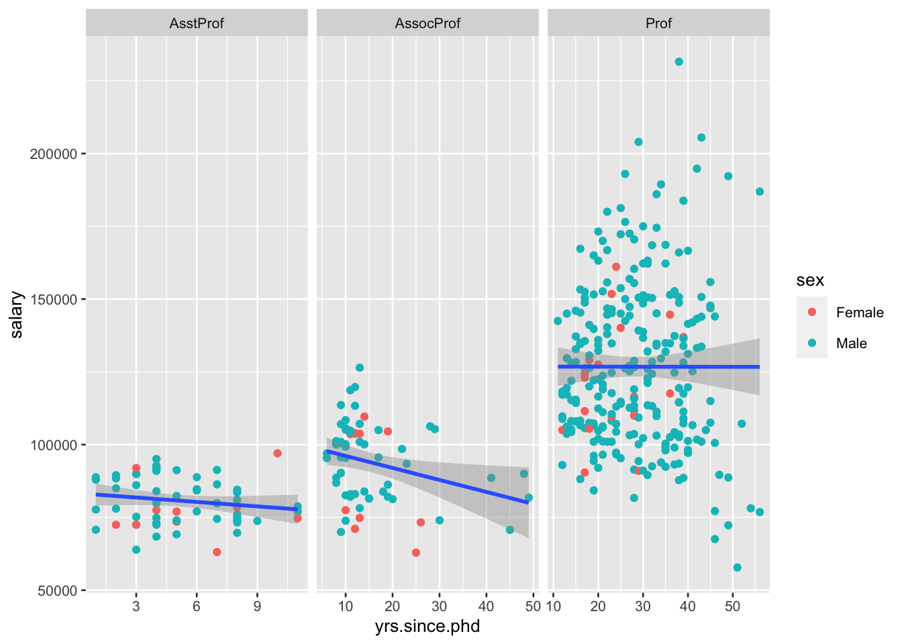
Again, we can see that the relationship seen in the overall dataset disappears within each of the groups.
We can also facet using more than one variable and arrange the figures into a grid via a two dimensional grouping. For example, suppose we want to evaluate the distribution of the experience wihtin each combination of rank and discipline of the individuals. This can be achieved by using the facet_grid layer.
ggplot(Salaries, aes(x = yrs.since.phd)) +
facet_grid(discipline ~ rank) +
geom_histogram()
`stat_bin()` using `bins = 30`. Pick better value with `binwidth`.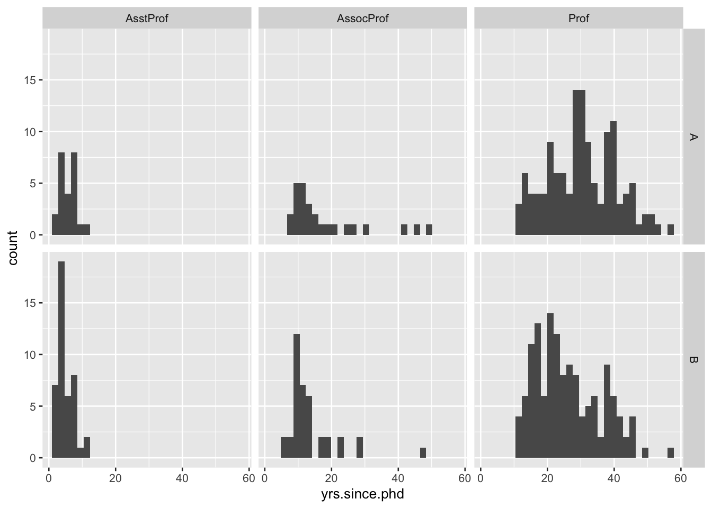
In here, we can see that professors in theoretical disciplines seem to have worked longer on average, however the range of the values is comparable in both cases. There also appears to be more Assistant Professors and Associate Professors in the applied departments, with no siginificant differences in gender. Similar analysis applied to earnings, however, reveals that the earnings seem to be higher at each level in the applied departments.
ggplot(Salaries, aes(x = salary)) +
facet_grid(discipline ~ rank) +
geom_histogram()
`stat_bin()` using `bins = 30`. Pick better value with `binwidth`.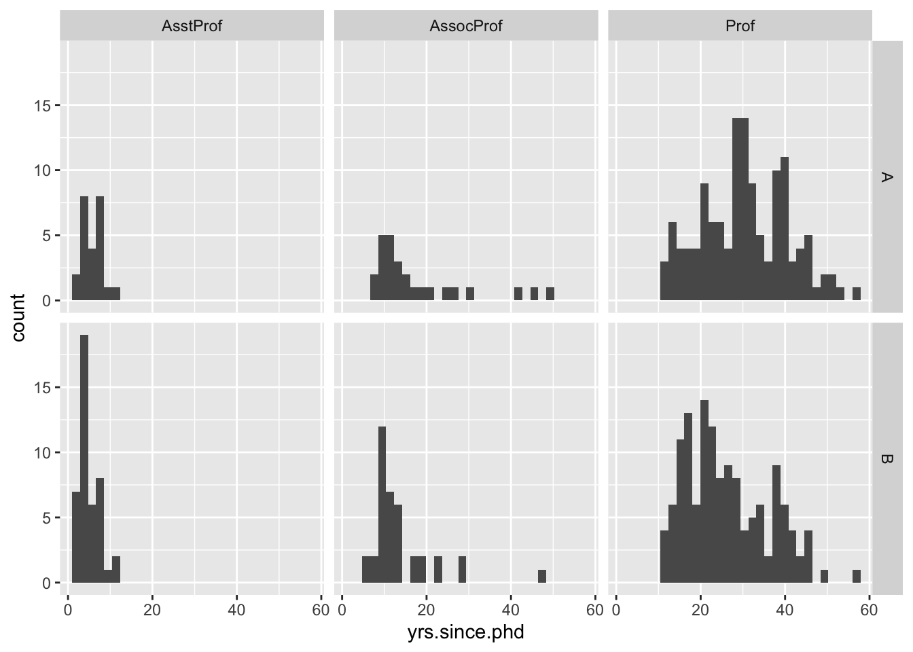
Plotting in a grid
Sometimes, we want to make our figure arrangement more customized, not necessarily arranged in accordance with our variable. For example, we may want to depict a consince summary of the most important of our findings in one 2x2 plot. To do this, we can use the plot_grid function from the cowplot package (which, as always, needs to be installed first).
library(cowplot)To do arrange the plots in an arbitrary rectangular grid, we first need to create each of our plots as a separate ggplot object. To avoid repetition, however, it’s best to first create a basic object and then add new layers to it and save it under separate names.
plt <- ggplot(Salaries, aes(fill = discipline, color = discipline))
plt_hist_s <- plt + geom_density(aes(x = salary), alpha = 0.3)
plt_hist_y <- plt + geom_density(aes(x = yrs.since.phd), alpha = 0.3)
plt_bar <- plt + geom_bar(aes(y = rank))
plt_sct <- plt + geom_point(aes(x = yrs.since.phd, y = salary)) +
geom_smooth(aes(x = yrs.since.phd, y = salary), method = 'lm')
plot_grid(plt_sct, plt_hist_s, plt_hist_y, plt_bar)
`geom_smooth()` using formula 'y ~ x'
Customizing plots
Note that in a lot of the cases above, the plots were far from publication quality - while they allowed to get an overview of the data, they kept the original variable names on the axes and had issues with axis tick labels overlapping, amongst other things. All those issues can be fixed with ggplot’s customization capabilities.
For startets, let’s consider one of the scatter plots we created earlier:
ggplot(Salaries, aes(x = yrs.since.phd, y = salary, color = rank)) +
geom_point() +
geom_smooth(method = 'lm')
`geom_smooth()` using formula 'y ~ x'It would be useful to make the variable names more formal on the plot. This can be done using the labs layer, used to specify labels:
ggplot(Salaries, aes(x = yrs.since.phd, y = salary, color = rank)) +
geom_point() +
geom_smooth(method = 'lm') +
#add axes labels
labs(x = 'Years since PhD', y = 'Salary in USD')
`geom_smooth()` using formula 'y ~ x'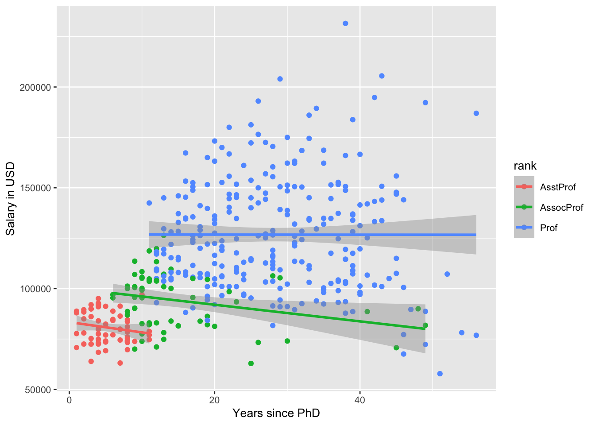
Title of the plot can also be specified using the ggtitle function:
ggplot(Salaries, aes(x = yrs.since.phd, y = salary, color = rank)) +
geom_point() +
geom_smooth(method = 'lm') +
#add axes labels
labs(x = 'Years since PhD', y = 'Salary in USD') +
#add title
ggtitle('Salaries of US college professors')
`geom_smooth()` using formula 'y ~ x'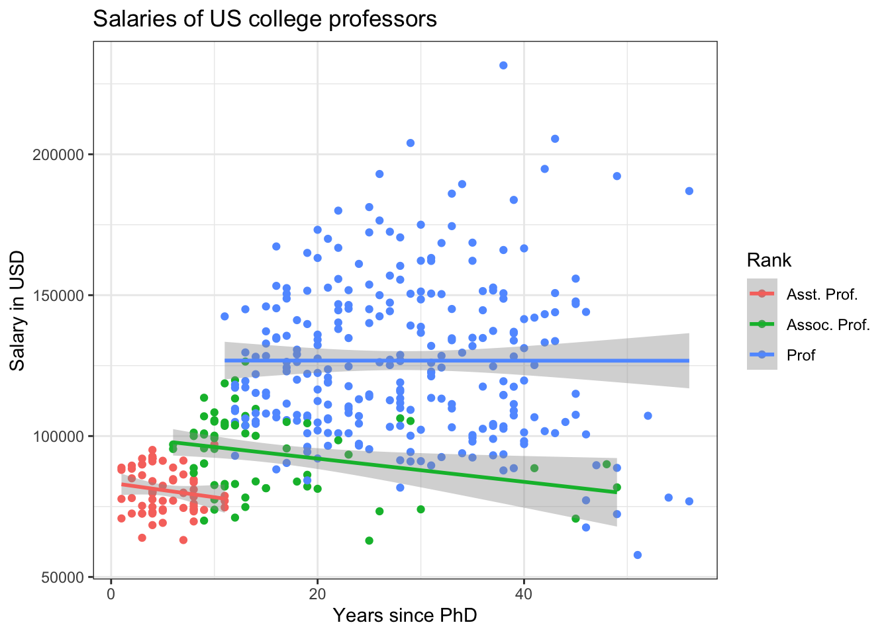
Furthremore, we can customize the legend labels as well. Ths is done using the scale_color_discrete layer, which applies manual changes to the color aesthetic we specified when initializing the ggplot object.
ggplot(Salaries, aes(x = yrs.since.phd, y = salary, color = rank)) +
geom_point() +
geom_smooth(method = 'lm') +
#add axes labels:
labs(x = 'Years since PhD', y = 'Salary in USD') +
#add title
ggtitle('Salaries of US college professors') +
#rename legend elements:
scale_color_discrete(name = 'Rank',
labels = c('Asst. Prof.',
'Assoc. Prof.',
'Prof'))
`geom_smooth()` using formula 'y ~ x'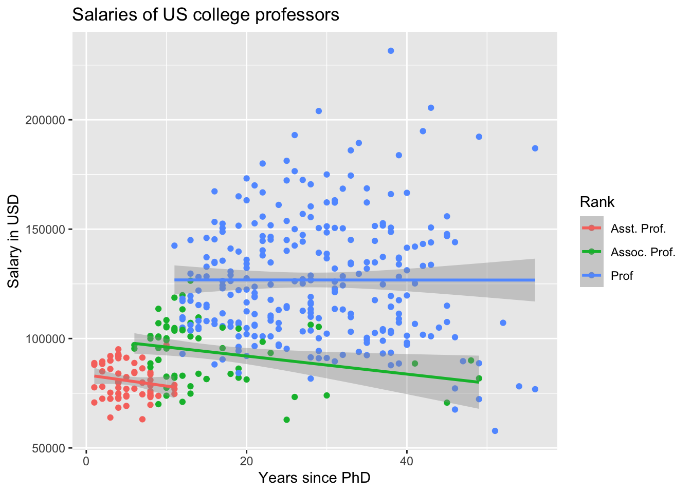
We can also customize the legend using the theme layer. This layer is used for customization of majority of plot elements, such as the legend, text and the axes.
ggplot(Salaries, aes(x = yrs.since.phd, y = salary, color = rank)) +
geom_point() +
geom_smooth(method = 'lm') +
#add axes labels:
labs(x = 'Years since PhD', y = 'Salary in USD') +
#add title
ggtitle('Salaries of US college professors') +
#rename legend elements:
scale_color_discrete(name = 'Rank',
labels = c('Asst. Prof.','Assoc. Prof.','Prof')) +
#customize the plot:
theme(legend.position = 'bottom', #move legend to the bottom
legend.background = element_rect(fill = 'lightblue'), #legend background
legend.text = element_text(size = 8, face = 'italic'), #legend font
legend.title = element_blank()) #remove title
`geom_smooth()` using formula 'y ~ x'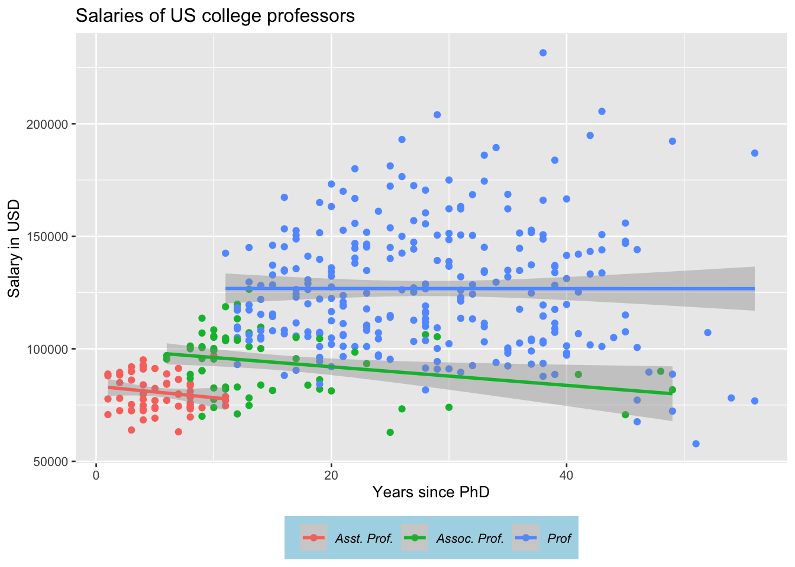
As seen above, the keyword arguments of theme usually take two forms - a string, such as legend.position = 'bottom', or element_* theme elements. You can read more about them in ?element_blank, however the basic logic is as follows - you use element_text() to specify text characteristics - such as the font, size, color or face of the text elements of the plot, such as legend labels or axis ticks, element_rect to specify the characteristics of rectangle elements, such as backgrounds and element_blank to make a given elements disappear from the plot entirely.
In some cases our axis labels are two long, which can be problematic especially in the x axis, as it results in overlaps and makes impossible to read them. A common solution is to rotate the labels by a certain angle. This can be done using the axis.text.x argument with element_text(rotation = n), where n are the magnitude of counter-clockwise rotation. The vertical and horizontal justification can he adjusted using the vjust and hjust arguments respectively.
byage <- Salaries %>%
mutate(yrs_range = cut_width(yrs.since.phd, 5, boundary = 5)) %>%
group_by(yrs_range, discipline) %>%
summarise(avg = mean(salary, na.rm = TRUE)) %>%
ungroup()
`summarise()` regrouping output by 'yrs_range' (override with `.groups` argument)
ggplot(byage, aes(x = yrs_range, y = avg, color = discipline,
lty = discipline, group = discipline)) +
geom_point() +
geom_line() +
labs(x = 'Years since PhD', y = 'Average earnings') +
theme(axis.text.x = element_text(angle = 45, vjust = 0.9, hjust = 1.0))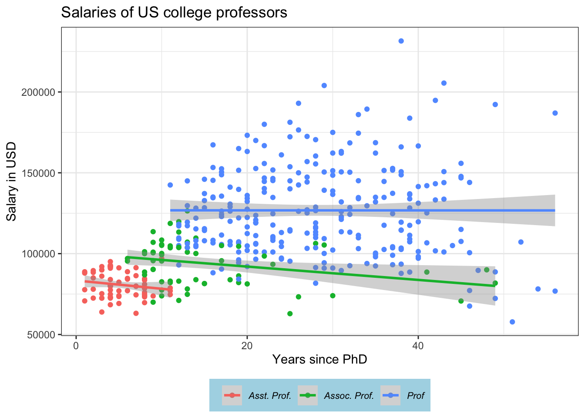
Finally, we can make changes to the overall plot by applying themes to the entire plot. Some of them are built into the ggplot package; more come with cowplot or ggpubr. You can find couple examples below, but feel free to explore them online.
plt <- ggplot(byage, aes(x = yrs_range, y = avg, color = discipline,
lty = discipline, group = discipline)) +
geom_point() +
geom_line() +
labs(x = 'Years since PhD', y = 'Average earnings')plt +
theme_bw() +
theme(axis.text.x = element_text(angle = 45, vjust = 0.8, hjust = 1.0))
plt +
theme_bw() +
theme(axis.text.x = element_text(angle = 45, vjust = 0.8, hjust = 1.0))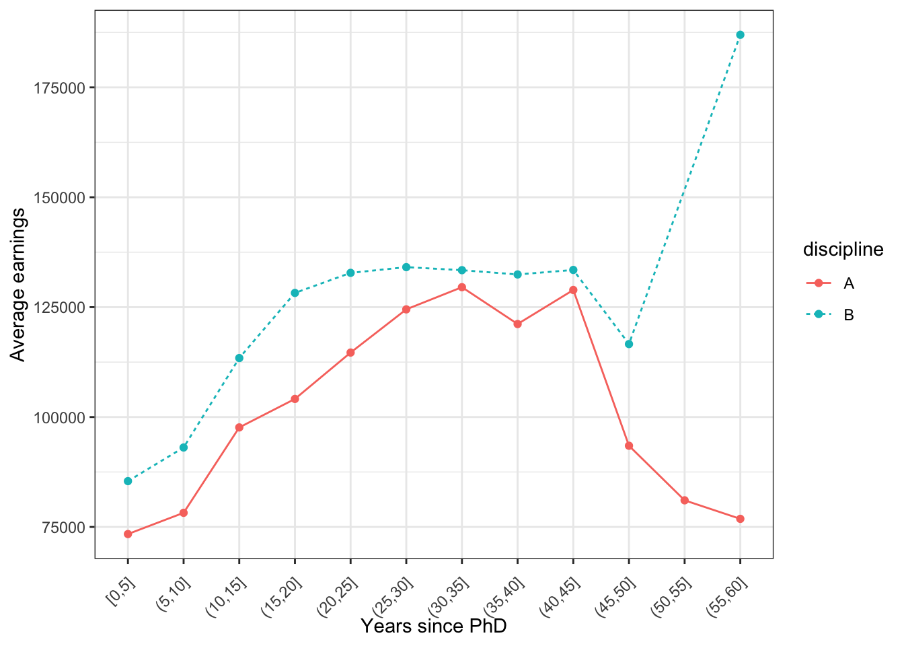
plt +
theme_classic() +
theme(axis.text.x = element_text(angle = 45, vjust = 0.8, hjust = 1.0))plt +
theme_cowplot() +
theme(axis.text.x = element_text(angle = 45, vjust = 0.8, hjust = 1.0))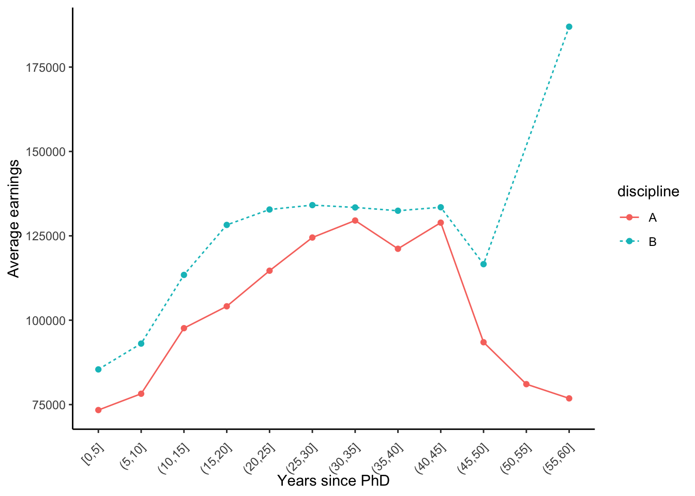
plt +
theme_minimal() +
theme(axis.text.x = element_text(angle = 45, vjust = 0.8, hjust = 1.0))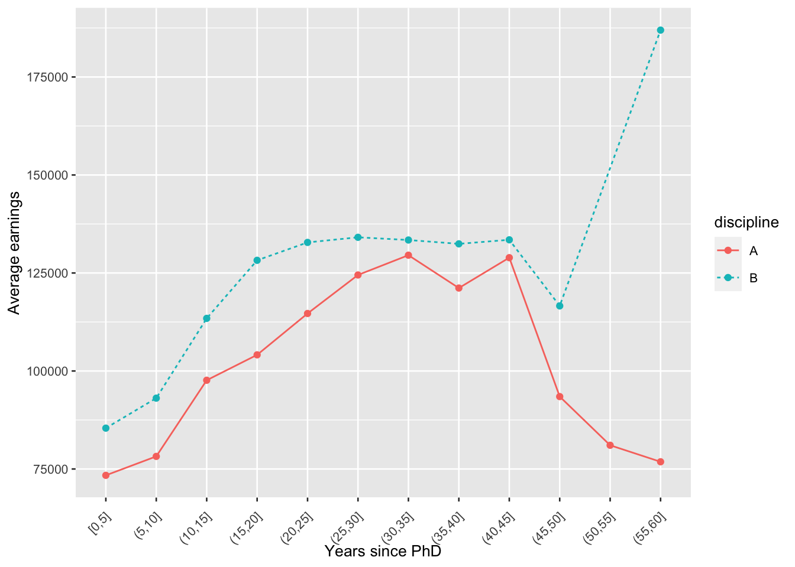
Note that the theme adjustments must be specified after a specific theme is specified, or otherwise if overrides them. You can also specify a theme upfront for your entire script by using theme_set().
theme_set(theme_grey(base_size = 10))
plt +
theme(axis.text.x = element_text(angle = 45, vjust = 0.8, hjust = 1.0))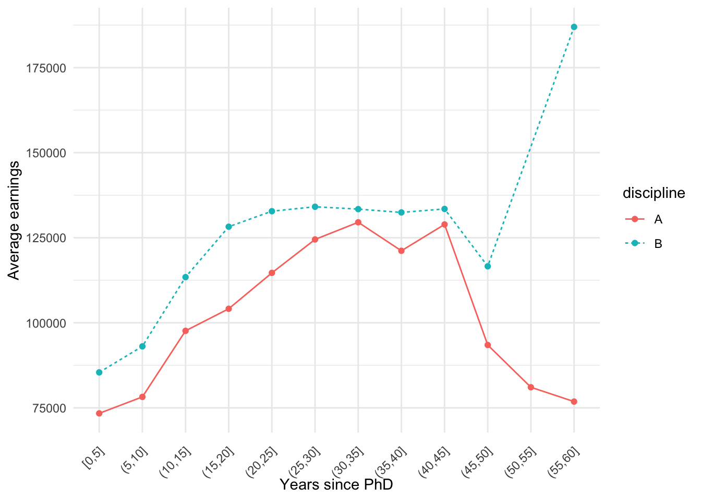
Saving plots
Saving plots can be done using the ggsave function:
ggsave(plot = plt, filename = 'files/test.png', width = 150, height = 100, units = 'mm')7.2 Summary
ggplot is a part of the
tidyversecollection and the most popular plotting package in Ryou initialize a ggplot object using the
ggplot()function, with the data frame you are planning to visualize as the first argument and the aesthetic mapping created by theaes()function as the second argument.aesthetic mappings are created by the
aes()function, which defines connections between graphical elements of the plot and the variables from our data frame. The elements that can be mapped include the x and y axes, color, fill, shape or line type. The mapping can be created globally, provided to theggplot()function and locally, by passingaes()to specific geoms.geoms are constituent elements of ggplot objects. They are different graphical structures, such as histograms, boxplots or scatter plots that can be added to an initialized ggplot object using the addition operator
+. Each geom uses the aesthetic mapping specified globally, unless specified otherwise locally.facet_wrapandfacet_gridfunctions can be used to split plots into small multiples. This is done using the~tilde operator - for example,facet_grid(sex ~ rank)will split our figure into a rectangular grid of plots of all combinations ofsexandrankvariables.we can customize elements of our plot, such as axes labels using the
labs()command, legend names, using thescale_*functions, as well as other elements through thetheme()layer, which most of the time works withelement_*functions as argumentswe can further apply pre-defined changes to our plots by using themes, such as
theme_bwortheme_minimal. These can also be set for the entire session usingtheme_set().plots can be saved via the
ggsavefunction.
Functions list
| function | package | description |
|---|---|---|
| glimpse() | c(“tibble”, “package:dplyr”) | NA |
| tibble() | c(“tibble”, “package:tidyr”, “package:dplyr”) | NA |
| c() | base | Combine values/vectors into a vector |
| length() | base | get number of elements in a vector or list |
| library() | base | load an R package |
| mean() | base | get mean of a vector |
| rep() | base | repeat a value or a vector N times |
| plot_grid() | cowplot | NA |
| theme_cowplot() | cowplot | NA |
| group_by() | dplyr | group tibble/data.frame by a factor variable. All further tidyverse operations are performed group-wise |
| mutate() | dplyr | modify/create a column in a data frame |
| summarise() | dplyr | collapse the dataset to a summary statistic. Usually used with group_by() |
| ungroup() | dplyr | NA |
| aes() | ggplot2 | NA |
| coord_flip() | ggplot2 | NA |
| cut_width() | ggplot2 | NA |
| element_blank() | ggplot2 | NA |
| element_rect() | ggplot2 | NA |
| element_text() | ggplot2 | Customise text in GGPLOT2 |
| facet_grid() | ggplot2 | NA |
| facet_wrap() | ggplot2 | NA |
| geom_bar() | ggplot2 | NA |
| geom_boxplot() | ggplot2 | NA |
| geom_col() | ggplot2 | NA |
| geom_density() | ggplot2 | NA |
| geom_histogram() | ggplot2 | NA |
| geom_line() | ggplot2 | NA |
| geom_point() | ggplot2 | NA |
| geom_smooth() | ggplot2 | NA |
| geom_violin() | ggplot2 | NA |
| ggplot() | ggplot2 | Create a ggplot graph |
| ggsave() | ggplot2 | NA |
| ggtitle() | ggplot2 | NA |
| labs() | ggplot2 | Customise labels in GGPLOT2 |
| labs() | ggplot2 | Add a vertical line in GGPLOT2 |
| scale_color_discrete() | ggplot2 | NA |
| stat_summary() | ggplot2 | NA |
| theme() | ggplot2 | Set theme for GGPLOT2 |
| theme_bw() | ggplot2 | NA |
| theme_classic() | ggplot2 | NA |
| theme_grey() | ggplot2 | NA |
| theme_minimal() | ggplot2 | NA |
| theme_set() | ggplot2 | NA |
| rgnorm() | gnorm | NA |
| rnorm() | stats | NA |
| data() | utils | NA |
7.3 Exercises
- Consider the plot we have created earlier through the plot_grid function from the cowplot package. Use your knowledge about plot customization to make it more readable, for example by:
- keeping only one legend for the fill variable
- rotating the axis tick labels if necessary
- changing the axes labels
- making the points in the scatter plot smaller
- adding a theme
Save the final figure to a png file.
You can find the initial code below:
plt <- ggplot(Salaries, aes(fill = discipline, color = discipline))
plt_hist_s <- plt + geom_density(aes(x = salary), alpha = 0.3)
plt_hist_y <- plt + geom_density(aes(x = yrs.since.phd), alpha = 0.3)
plt_bar <- plt + geom_bar(aes(y = rank))
plt_sct <- plt + geom_point(aes(x = yrs.since.phd, y = salary)) +
geom_smooth(aes(x = yrs.since.phd, y = salary), method = 'lm')
plot_grid(plt_sct, plt_hist_s, plt_hist_y, plt_bar)
`geom_smooth()` using formula 'y ~ x'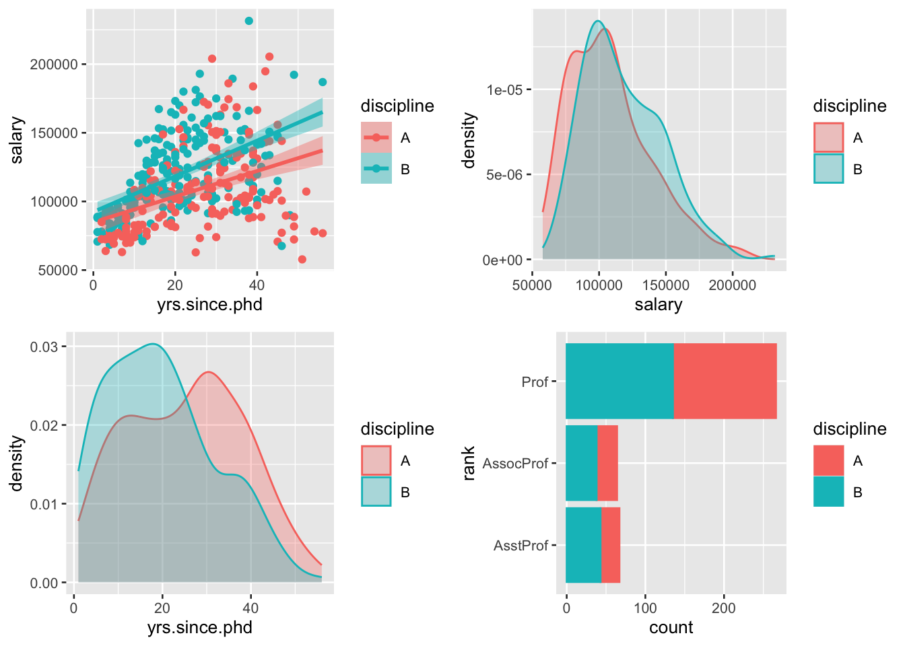
For the remainder of next exericses, you will need to load the gapminder dataset which is a part of the gapminder package.
data(gapminder, package = 'gapminder')Get an overview of the dataset. How many variables an observations are there? How many unique values does each variable have?
Visualize the relationship between the per capita gdp and life expectancy in 2007 using a scatter plot. Include one line of best fit and color the markers by continent. Make sure the plot has appropriate axis labels. Does the line offer a good fit to the line? What kind of curve would better? Why?
Examine the countries which appear to divert from the overall trend in the plot you created in the previous exercise.
Visualize the difference in GDP per capita distribution between continents (in 2007). Use at least two different methods and compare their advantages and disadvantages. Remember about appropriate labels and title!
Compare the GDP per capita of each continent in each year using a connected scatter plot. Be careful - taking the group average of each continent is incorrect, as the population sizes differ. You can try presenting the values on a log scale using
scale_y_log10()to make the lines more visible.Prepare the same plot, but this time visualizing the average GDP growth rate for each of the continents. HINT: use the
groupby()%>%mutate()routine with thelag()function as in the previous chapter.
The solutions for the exercises will be available here on 2021-01-07.